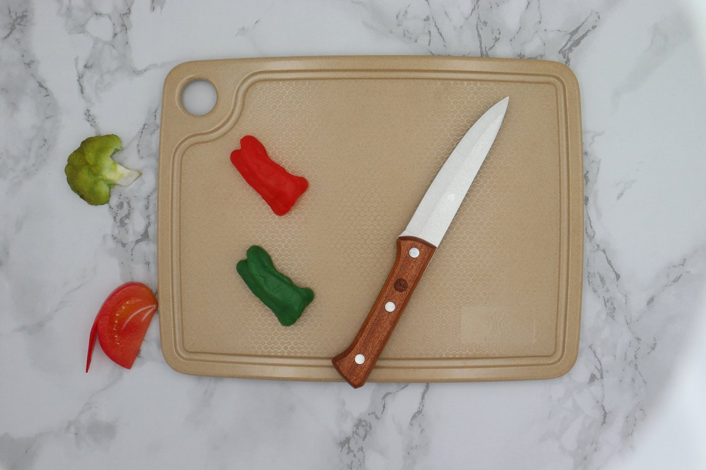

A Board With a Story
The heart of a home kitchen.
Every meal begins on a board. Ours is shaped from rice husk fibre — the humble outer shell of the rice grain — blended with a food-grade starch binder for a surface that's warm to the touch, kind to your blades, and quietly kind to the planet.
The soft honeycomb texture grips as you chop, the raised groove keeps juices where they belong, and the gentle colours settle beautifully into any kitchen.
Designed for the everyday moments that matter.
